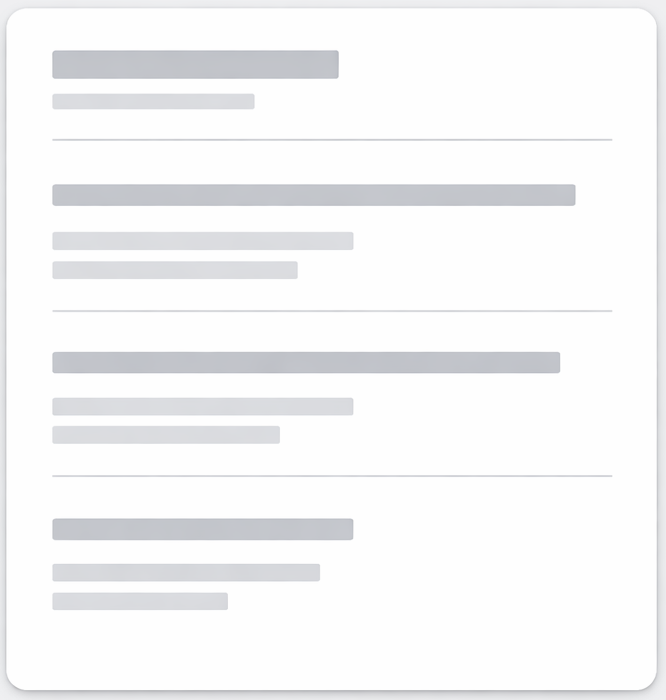

A simple visual guide for students & freshers
See Resume Structure
Recruiters don't read resumes
They scan for keywords and structureCrowded resumes feel stressful
No white space = instant rejectionEverything looks equally important
Nothing stands out to the eyeLong paragraphs get ignored
Impact is lost in extra wordsColor choices aren’t aesthetic decisions — they directly affect how fast a recruiter can decide
Reduces visual noise
Faster scanningMaximum contrast
Zero reading frictionNatural priority separation
Clear hierarchyGuided attention
Focus stays on skillsGood design doesn’t impress recruiters. It removes reasons to say no